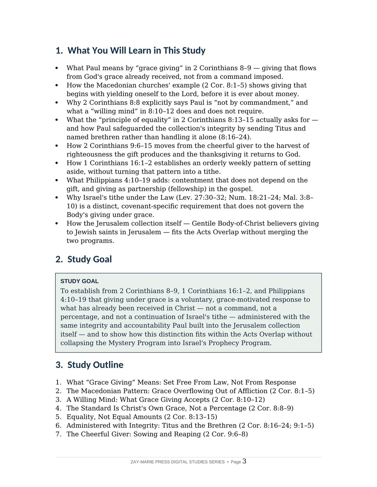
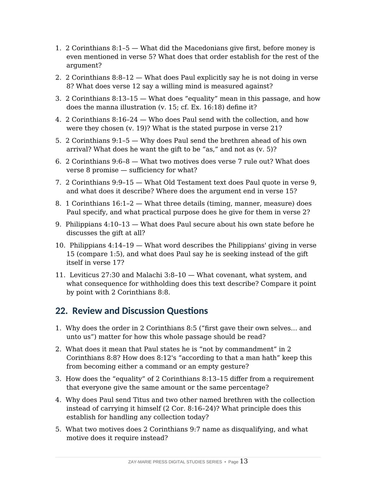

Giving Under Grace
Contentment, Fellowship, and the Cheerful Giver in Paul's Letters to the Body of Christ
A Biblical Examination of Giving as an Expression of Grace, Not a Requirement of Law, Under the Mystery Revealed Through Paul
Believers under grace are sometimes told giving is still governed by a tithe, a percentage, or a command, and sometimes told the opposite — that grace leaves giving with no shape or expectation at all. Paul's own letters answer both. 2 Corinthians 8–9 gives the fullest treatment of giving in the New Testament: a willing mind measured against what a believer has, not a rate imposed from outside, administered with the same integrity and accountability Paul built into every part of his ministry.
This study traces that pattern through the Macedonian churches' example, the standard Paul sets in Christ's own grace, the "equality" of 2 Corinthians 8:13–15, and the cheerful giver of 2 Corinthians 9. It reads 1 Corinthians 16:1–2's orderly weekly setting-aside and Philippians 4:10–19's contentment that does not depend on the gift, then distinguishes this grace-giving from Israel's tithe under the Law, so the Jerusalem collection itself — Gentile believers giving to Jewish saints — is read within the Acts Overlap without either program's law being placed on the other.
A Willing Mind, Not a Rate Imposed From Outside
Paul never tells the Body of Christ what percentage to give. What he gives instead, at length, is a pattern: a willing mind measured against what a believer actually has (2 Cor. 8:12), a standard set by Christ's own grace rather than a fixed figure (2 Cor. 8:8–9), and an "equality" that asks the well-supplied to meet the need of the lacking, not that every giver hand over an equal amount (2 Cor. 8:13–15). Paul then builds real accountability into the gift itself, sending Titus and named brethren so that no one — including Paul — could be blamed for handling it alone (2 Cor. 8:16–24).
This study is not a general study of the believer's identity in Christ, which Study 16 surveys broadly, nor a full treatment of prayer under grace, which Study 22 examines in its own right, nor a comparison of covenant frameworks, which Study 32 undertakes. It asks a narrower question: once grace, not law, is the ground of giving, what does Paul actually require, and what does he leave to the giver?
How These Studies Relate
Study 47 traces the pattern, the integrity, and the distinction from Israel's tithe that Paul establishes for giving under grace.
Study 22 — Prayer Under Grace Compare another practice of the believer's daily life reframed under grace rather than under a Kingdom-era command, the same interpretive move Study 47 applies to giving.
Study 45 — Sanctification Under Grace See the same pattern applied to holiness: the Body's practice under grace is distinguished from Israel's requirement under the Mosaic Law without denying that both use similar language.
Study 48 — The Christian Household See the same "not by commandment, yet not without real accountability" pattern applied to the household code's own structure of mutual submission and self-limiting authority.
Trace the Pattern, the Integrity, and the Distinction
The Macedonian Pattern
See how 2 Corinthians 8:1–5 grounds giving in first yielding oneself to the Lord.
A Willing Mind, Not a Command
Read why 2 Corinthians 8:8 explicitly says Paul is "not by commandment."
Equality, Not Equal Amounts
See what the "principle of equality" in 2 Corinthians 8:13–15 actually asks for.
Administered With Integrity
Trace why Paul sends Titus and named brethren rather than handling the gift alone.
The Cheerful Giver
Follow 2 Corinthians 9:6–15 from sowing and reaping to the harvest of righteousness.
Contentment and Israel's Tithe
Read Philippians 4:10–19's contentment, then distinguish grace-giving from the Law's tithe.
Examine the Passages for Yourself
2 Corinthians 8:1–5
The Macedonians first gave themselves to the Lord — before the gift is ever about money.
2 Corinthians 8:8–9
"Not by commandment" — the standard set is Christ's own grace, not a percentage.
2 Corinthians 8:13–15
"Equality" defined by the manna illustration, not an equal amount from every giver.
2 Corinthians 8:16–24
Titus and named brethren sent so the collection's integrity is never in question.
2 Corinthians 9:6–8
Not grudgingly, not of necessity — God loves a cheerful giver.
1 Corinthians 16:1–2
An orderly weekly setting-aside, without turning the pattern into a tithe.
Philippians 4:10–19
Contentment that does not depend on the gift, and giving as gospel fellowship.
Malachi 3:8–10
Israel's tithe under the Law — a distinct, covenant-specific requirement read on its own terms.
Not By Commandment
Paul secures the gift's integrity, then explicitly refuses to secure it by a command.
2 Corinthians 8:8 states plainly that Paul is "not by commandment" requiring this gift. He has just described the Macedonians' example in the highest terms, and he still declines to turn that example into a law. What he asks for instead is a willing mind, measured against what a believer already has, not against what he does not have.
Preview the Study Before You Purchase
Click any page to enlarge it for reading.
{kind=link}
{kind=link}

What You Will Learn
See the study's goal, outline, and the question it sets out to answer.
{kind=link}

Review and Discussion Questions
See the kind of questions this study asks readers to work through for themselves.
A Focused Study Built for
Understanding and Teaching
16-Page In-Depth Biblical Study
A careful study of giving under grace, grounded in Paul's own letters.
17 Core Teaching Sections
Progress from what grace-giving means through the Macedonian pattern to Israel's tithe under the Law.
Key Distinctions to Retain
Keep the standard, the integrity, and the Law/grace distinction clearly separated.
Review and Discussion Questions
Test the study's distinctions concerning command, standard, and covenant.
Teaching Outline
A structured framework for teaching giving under grace with precision.
Guided Further Study
Return to the Macedonian pattern, the cheerful giver, and the tithe texts, with directed questions.
Scripture-Tracing Exercise
Trace the study's key passages across 2 Corinthians, 1 Corinthians, and Philippians in their own context.
Final Synthesis Exercise
Bring the evidence together in one coherent, Scripture-based explanation.
Giving Under Grace
16-page digital PDF · For personal use
Want More Than a Focused Study?
Digital Studies examine particular biblical subjects and difficult passages. The 40-lesson Biblical Hermeneutics course teaches a complete, repeatable method for establishing meaning in context, determining proper assignment, and making responsible application.